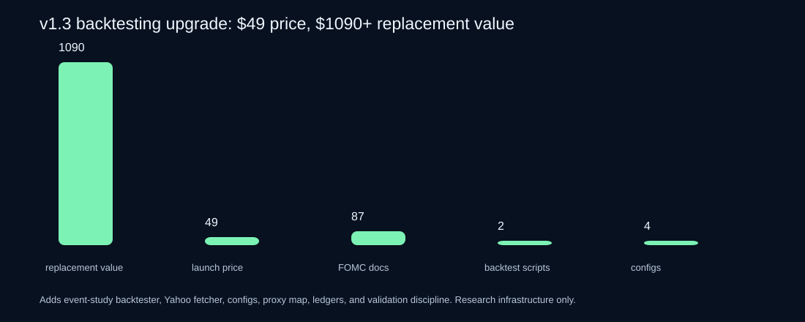
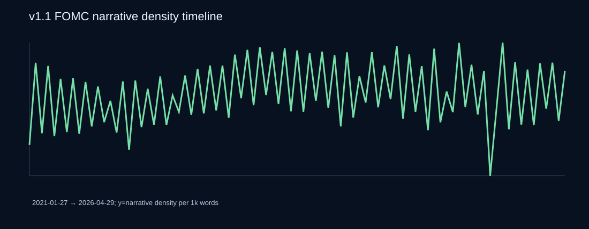
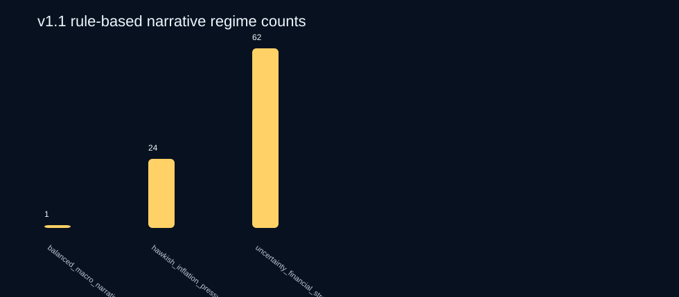

Macro Narrative Backtesting Research Accelerator
Price: $49. Conservative replacement value: $1,090+. v1.3 turns the product from “interesting FOMC text dataset” into a practical macro narrative backtesting kit: cleaned public text, engineered features, event-study backtester, no-key Yahoo price fetcher, ETF proxy map, experiment ledgers, validation/OOS discipline, QA, notebooks, prompts, memos, and charts.
For macro narrative researchers who want to test whether FOMC language features relate to rates, USD, gold, equity risk, or managed-futures diagnostics without first building the plumbing.
58-file paid kit87 FOMC documents$1,090+ value stackevent-study backtesterYahoo price fetcherDBMF diagnostic disciplineno alpha promises
Get the $49 backtesting kit Download free sample View source manifest Read sample QA reportWhy v1.3 is materially more useful
Conservative replacement-value estimate across dataset, features, recipes, QA, templates, notebooks, and backtesting infrastructure.
$1,090 divided by the $49 launch price. The claim is setup-work replacement value, not return or alpha.
Includes a runnable event-study backtester with lag, holding window, validation/OOS split, hit-rate, return, drawdown, and Sharpe-like summary.
What is inside the paid v1.3 accelerator
cleaned FOMC documents: 44 statements and 43 minutes.
12 narrative signal recipes plus 4 starter backtest configs mapping features to candidate ETF proxies and horizons.
`backtest_macro_narrative.py` and `fetch_price_data_yahoo.py` make the first real test possible without paid APIs.
Buyer promise
The pain
Macro narrative researchers do not just need a text file. They need release-date alignment, price imports, event windows, validation splits, baseline discipline, ledgers, and a way to avoid tuning on locked OOS.
The shortcut
The v1.3 bundle gives full cleaned FOMC text, engineered narrative features, backtesting scripts, price-fetch workflow, market proxy map, backtest configs, example output, QA scripts, notebooks, prompts, memo templates, and experiment ledgers.
Proof charts



Paid v1.3 files
| File | Purpose |
|---|---|
BACKTESTING_START_HERE_v1_3.md | Step-by-step path from bundle download to a first backtest. |
scripts/backtest_macro_narrative.py | Leakage-aware event-study backtester with lag days, holding days, split date, target asset, and results TSV. |
scripts/fetch_price_data_yahoo.py | No-key daily adjusted-close fetcher for ETF proxy columns such as SPY, TLT, GLD, UUP, and DBMF. |
signal_recipe_backtest_configs_v1_3.tsv | Starter configs mapping narrative features to candidate assets, horizons, and baselines. |
market_proxy_map_v1_3.tsv | Rates, equities, gold, USD, and DBMF proxy map with caveats. |
templates/backtest_experiment_ledger_v1_3.tsv | Validation/OOS/DBMF-aware ledger template for every backtest trial. |
fomc_documents_v1.tsv | 87 cleaned FOMC statement/minutes rows with date, URL, title, text, tags, and provenance note. |
fomc_meeting_features_v1_1.tsv | Engineered feature store: hawkish/dovish spread, inflation-labor balance, uncertainty/financial-conditions pressure, z-scores, deltas, and regimes. |
regime_timeline_v1_1.tsv | Chronological timeline for leakage-safe joining to market/economic data. |
signal_recipes_v1_1.tsv | 12 concrete research recipes with formulas, candidate markets, and validation guardrails. |
macro_narrative_backtesting_notebook_v1_3.ipynb | Notebook scaffold for loading features, running the smoke backtest, and summarizing results. |
BACKTESTING_VALIDATION_CHECKLIST_v1_3.md | Checklist for release timing, validation/OOS discipline, baselines, and DBMF diagnostic handling. |
VALUE_STACK_BACKTESTING_v1_3.md/.tsv | Explicit $1,090+ replacement-value stack. |
scripts/qa_v1_3.py | Buyer-verifiable QA that runs the backtester and checks required files. |
Free sample
The free sample remains available so buyers can inspect schema, source posture, and chart style before buying. The full paid kit is distributed only through Gumroad.
Download free sample v0.1 View sample rowsPrice
Macro Narrative Backtesting Research Accelerator v1.3
Launch deal for the full 58-file accelerator: FOMC data, feature store, backtesting harness, price fetcher, configs, ledgers, notebooks, examples, QA, charts, and prompts.
Buy on GumroadFuture price path
Once demand is proven, this can become a larger macro text/backtesting kit with BEA/BLS/Treasury modules, richer notebooks, and team licenses. Current buyers get the launch price.
Not investment advice
This is a research workflow/data product, not a signal guarantee, investment advice, or promise of returns. It packages auditable public text and backtesting scaffolds so buyers can do their own research faster and more carefully.